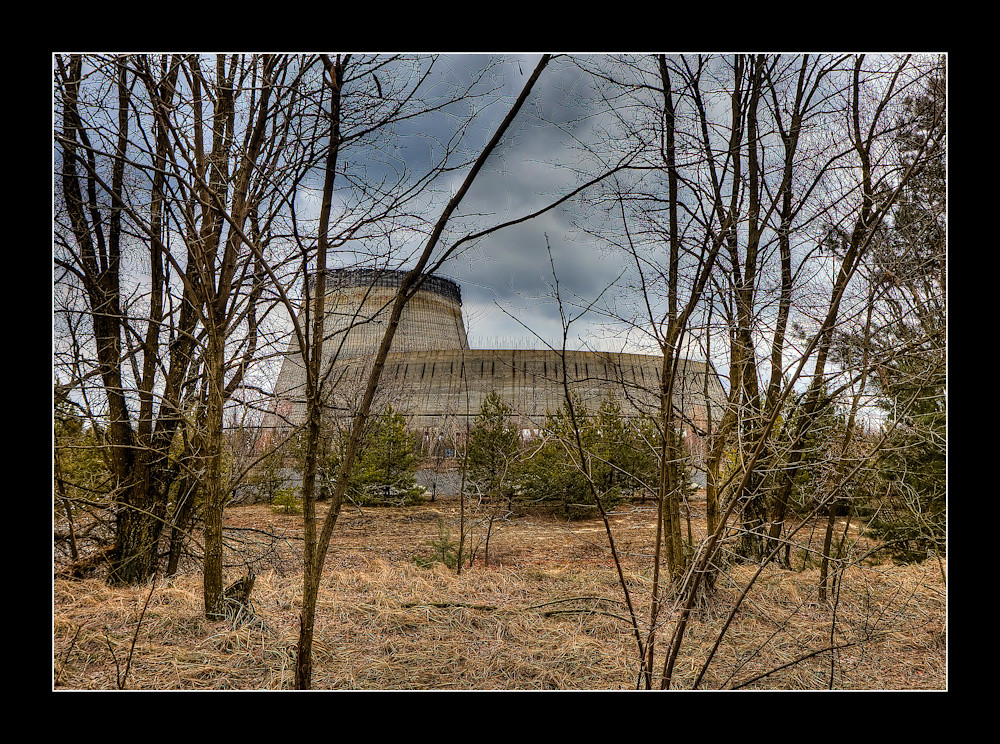

Main reactor busted: Must get replacement from Tosche station
Did you hear that? They've shut down the main reactor. We'll be destroyed for sure. This is madness! We're doomed! There'll be no escape for the Princess this time. What's that? Artoo! Artoo-Detoo, where are you? At last! Where have you been? They're heading in this direction.
Now be careful, Artoo. He made a fair move. Screaming about it won't help you. Let him have it. It's not wise to upset a Wookiee. But sir, nobody worries about upsetting a droid. That's 'cause droids don't pull people's arms out of their socket when they lose.
There's no mystical energy field that controls my destiny. It's all a lot of simple tricks and nonsense. I suggest you try it again, Luke. This time, let go your conscious self and act on instinct.
Yeah?This R2 unit has a bad motivator. Look! Hey, what're you trying to push on us? Excuse me, sir, but that R2 unit is in prime condition. A real bargain.
All right. Threepio! Come in, Threepio! Threepio! Get to the top! I can't Where could he be? Threepio! Threepio, will you come in? They aren't here! Something must have happened to them. See if they've been captured. Hurry! One thing's for sure.